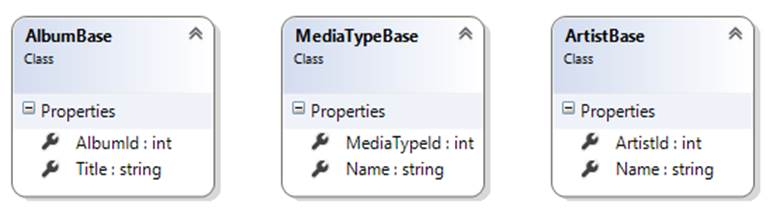
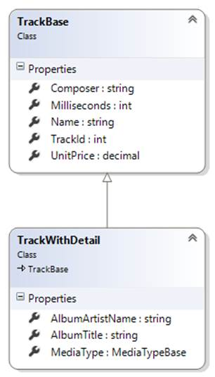
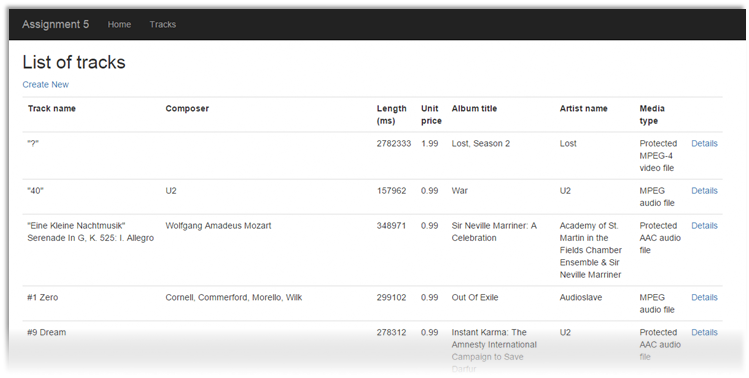
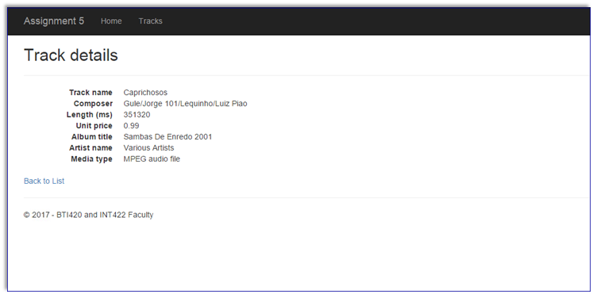
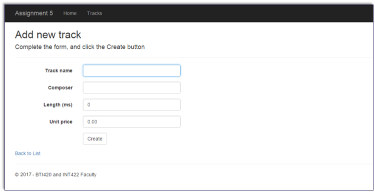
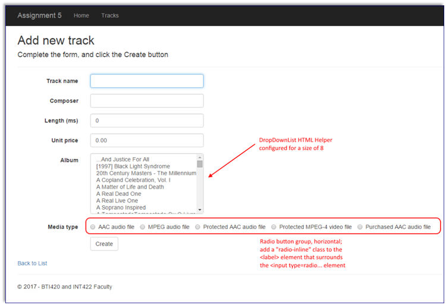

INT422 Assignment 5
Work with associated data, with “add new” functionality.
Read/skim all of this document before you begin work.
Due date
Section A: Tuesday, March 6, 2018, 11:59pm
Grade value: 5% of your final course grade
If you wish to submit the lab before the due date and time, you can do that.
Objective(s)
Work with associated data, with “add new” functionality. Your web app will enable users to add new Track objects.
Introduction to the problem to be solved
We need an app that will display lists of Album, MediaType, and Track objects.
The app will also enable the browser user to add new Track objects.
Specifications overview and work plan
Here’s a brief list of specifications that you must implement:
Here is a brief work plan sequence:
During the class/session, your professor will help you get started and make progress on this assignment.
Every week, in the computer-lab class/session, your teacher will record a grade when you complete a specific small portion of the assignment. We call this “in-class grading“.
The in-class grading will be announced in-class by your professor.
Create the project, based on the project template
Create a new web app, named Assignment5.
It MUST use the new “Web app project template v1” project template. Download this new project template from the course website, and install it into your Visual Studio configuration.
Warning: Your teachers believe that the best way to work through this Assignment 5 is to do incrementally. Get one thing working, before moving on to the next. Test each part.
Customize the app’s appearance
You will customize the appearance all of your web apps and assignments. Never submit an assignment that has the generic auto-generated text content. Make the time to customize the web app’s appearance.
❝For this assignment, you can defer this customization work until later. Come back to it at any time, and complete it before you submit your work.
Follow the guidance from Assignment 1 to customize the app’s appearance.
Create view models and mappers that cover the initial use cases
We will be working with the track entity, AND some of its associated entities.
❝Tip: Study the DesignModelClasses.cd class diagram that’s in the Models folder. It will help you visualize where the Track entity is located in the design model.
Remember to add the [Key] data annotation to all/most of your view model classes.
As noted above, the following use cases need view models, so go ahead and write them. We suggest that you need only “AlbumBase” and “MediaTypeBase”. If you also want to pull in Artist information, then you can create an “ArtistBase” class too (it’s easy to do). None of these “…Base” classes will have navigation properties, and none of these will have composed (AutoMapper flattened) properties. Keep them simple.

Track entity view model classes
For the track entity, we will support these use cases:

The “TrackBase” view model class needs many of the track entity’s properties, but not all.
As above, ignore the navigation properties in TrackBase. Also, you can ignore the MediaTypeId and GenreId properties.
Add a “TrackWithDetail” view model class:
Later (but soon), we will need two view model classes – TrackAddForm and TrackAdd – to support this use case:
If you wish, you can create the class code blocks for them now, and we’ll fill in the details later (but soon).
Mappers
Define the maps that these use cases will need. At this point in time, you should have enough experience to know which maps are required. Ask if you need help.
Add methods to the Manager class that handle the use cases
In the Manager class, add the methods that support the use cases.
For “get all”, you should probably use a LINQ query expression to sort the results in a logical way.
For “add new” track, you must use the coding pattern, which validates the incoming data by locating/fetching the objects that will be associated to the new track object.
A new track has TWO associated objects – album AND media type. Therefore, you must fetch (validate) both, and configure them on the new track object before saving.
Add controller(s), with code to work with the manager object
Optionally, you can create controllers and views for the album, artist, and media type entities. They’re easy to do, and can help you visualize the data in those collections.
Create a controller for the track entity. It will support the “get all” and “get one” use cases (and “add new”, described in the next section). Add views for “get all” and “get one” too.
Progress checkpoint
At this point, the web app will work for “get all” tracks, and “get one” track. Example images are shown below.


For the track entity, implement
the “add new” use case;
including controller code, and view
Implement the “add new” use case for the track entity.
TrackAddForm view model class, controller GET method, and view
Its “TrackAddForm” view model class will need SelectList properties for both album and media type. Remember to follow the naming rule for SelectList properties.
After you write the GET method (for “add new”), scaffold a view. It should look something like the following.

Next, as you have learned, edit the view. Add item-selection elements for Album and MediaType.
We suggest that you use a DropDownList HTML Helper for the Album. Make its size 8, so that it renders as a listbox.
Use a radio button group for the MediaType. It would be nice to render it as a horizontal radio button group. Learn how to do this, by reading this section of the Bootstrap documentation.
It should look something like the following.

TrackAdd view model class, controller POST method
The “TrackAdd” view model class will be similar to TrackAddForm.
However, replace the SelectList properties with int properties named <entity>Id. Make them “required” by adding [Range…] data annotations.
Write the controller POST method next. After a successful “add new” result, redirect to the Details view.
Testing your work
While designing and coding your web app, use the Visual Studio debugger to test your algorithms, and inspect the data that you are working with.
In a browser, test your work, by doing tasks that fulfill the use cases in the specifications.
Important note
You MUST use the provided “Web app project v1” project template and AutoMapper instance API for your assignment. Failure to do so will result in a huge penalty for the assignment.
Reminder about academic honesty
You must comply with the College’s academic honesty policy. Although you may interact and collaborate with others, you must submit your own work.
Submitting your work
Here’s how to submit your work, before the due date and time:
1. Locate the folder that holds your solution files. In Solution Explorer, right-click the “Solution” item, and choose “Open Folder in File Explorer”. It has three (or more) items: a Visual Studio Solution file, a folder that has your project’s source code, and a “packages” folder. Go UP one level.
2. Make a copy of the folder. This is the version that you will be uploading.
3. Remove the “packages” folder from the copied folder; also, remove the “bin” and “obj” folders.
4. Compress/zip the copied folder. The zip file SHOULD be about 2MB or less in size. If it isn’t, you haven’t followed the instructions properly.
5. Login to My.Seneca/Blackboard. Open the Web Programming on Windows course area. Click the “Assignments” link on the left-side navigator. Follow the link for this lab. Submit/upload your zip file. The page will accept three submissions, so if you upload, then decide to fix something and upload again, you can do so.